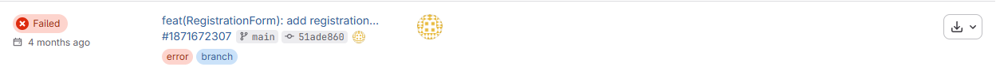
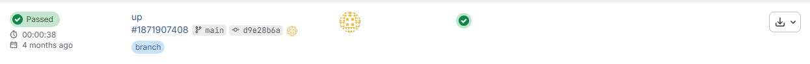
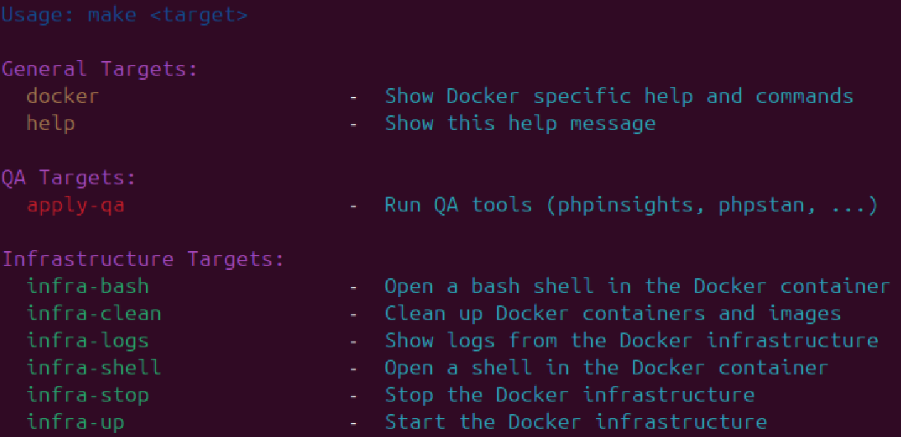
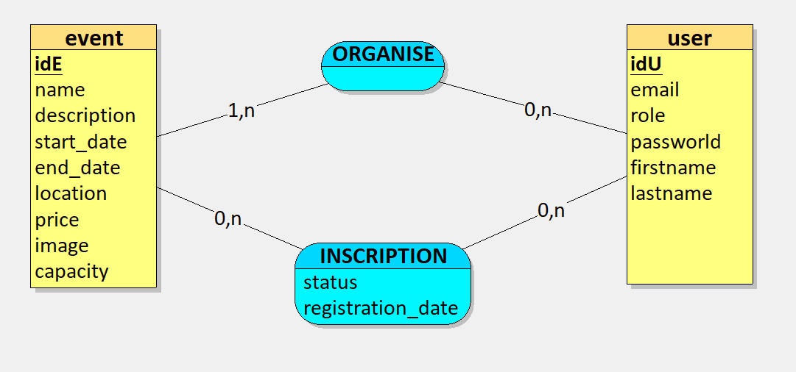
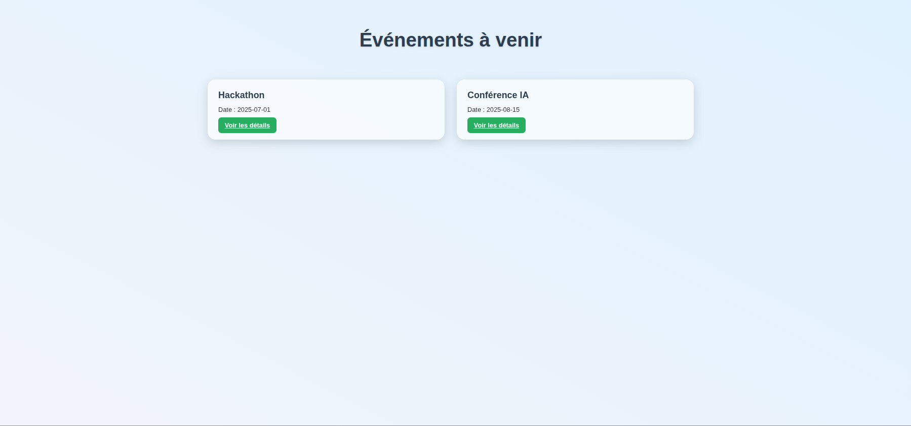

Application web de gestion d'événements développée de A à Z pour le CSE d'Ekino — de la conception à la mise en production, en Symfony / PHP.
01 — Présentation
J'ai réalisé mon stage de BTS SIO au sein d'Ekino, une société spécialisée dans la transformation digitale.
Durant cette période de cinq semaines, j'ai travaillé sur la conception d'une application web permettant au CSE de l'entreprise de créer et gérer des événements.
03 — Documentation
Durant ce stage, j'ai eu l'occasion de me familiariser avec la rédaction de documentation technique, un aspect fondamental du développement logiciel.
J'ai appris à documenter de manière claire, structurée et concise chaque ajout au projet (qualité, infrastructure, etc.), en respectant les standards internationaux du domaine, notamment l'usage de la langue anglaise.
Vous pouvez retrouver toute la documentation que j'ai rédigée sur mon GitHub.
Exemples de documents rédigés :
04 — Fiche Technique
Avant de coder, j'ai travaillé sur la conception et la planification du projet avec l'IA Cline, qui m'a aidé à créer trois fichiers essentiels.
Présente la vision et les objectifs de l'application Legolas. Il définit les rôles utilisateurs (administrateur, organisateur, participant), les principales fonctionnalités (création d'événements, inscriptions, tableau de bord, authentification), ainsi que les indicateurs de performance et les défis techniques.

Présente l'avancement du projet — étapes déjà réalisées et prochaines priorités. Permet de suivre l'évolution et les jalons restants jusqu'à une version fonctionnelle.
Décrit l'environnement technique et l'architecture du projet — technologies utilisées, design patterns (Repository, DI, Front Controller), bonnes pratiques de sécurité et de qualité.
05 — Assurance Qualité
Afin d'assurer la qualité, la cohérence et la maintenabilité du code, j'ai mis en place plusieurs outils QA.
Formatage automatique du code et respect des standards, garantissant une base de code homogène.
Analyse de la qualité globale du projet — lisibilité, complexité et bonnes pratiques.
Analyse statique pour détecter en amont les erreurs potentielles et améliorer la robustesse du code.
Refactorisation automatique et modernisation du code selon les dernières versions de PHP et Symfony.
Automatisation de la mise à jour des dépendances, assurant la sécurité et la stabilité du projet.
06 — Infrastructure
Les ADR (Architecture Decision Records) sont des documents servant à consigner les décisions techniques importantes prises au cours du développement, ainsi que leur contexte et leurs conséquences. Cette pratique favorise la transparence et la cohérence technique.
La CI (Continuous Integration) a été mise en place pour détecter rapidement les erreurs. Le pipeline inclut des étapes de build, tests unitaires, analyse statique (PHPStan, Rector) et déploiement automatique.
Docker a été utilisé pour assurer la portabilité, l'isolation et la cohérence de l'environnement de développement, test et production.


07 — Makefile
Un
Makefile
est un fichier de configuration utilisé pour automatiser des tâches répétitives
dans un projet logiciel. Chaque tâche est définie comme une cible avec ses commandes associées,
permettant de lancer plusieurs opérations avec une seule commande make.
Grâce à ce système, j'ai pu standardiser et simplifier le workflow de l'équipe, par exemple pour exécuter des QA ou des commandes Docker, tout en assurant une méthode cohérente et reproductible.

08 — Base de Données
Pour la persistance des données, j'ai choisi PostgreSQL, hébergé dans un conteneur Docker. Avant de coder, j'ai réalisé la conception de la base de données (MCD) pour définir clairement les relations entre les utilisateurs, les événements et les inscriptions.
Plutôt que d'écrire du SQL brut, j'ai utilisé l'ORM Doctrine intégré à Symfony, ce qui m'a permis de manipuler les données sous forme d'Entités PHP.
Event.php), ce qui sécurise les requêtes.
09 — Interface
La page d'accueil de l'application agit comme un véritable tableau de bord pour les membres du CSE. L'objectif était de proposer une interface intuitive et épurée, permettant aux utilisateurs de voir en un coup d'œil les événements à venir.

Contact